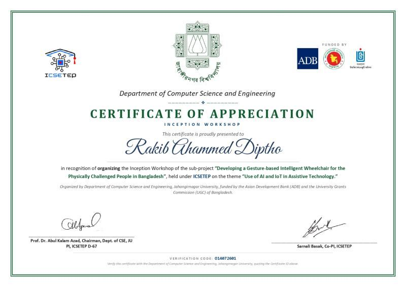
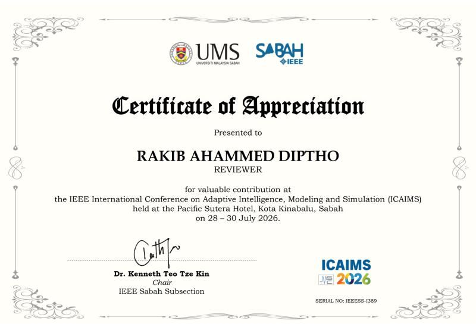

About Me
Open to PhD positions from 2027.
I am a Research Assistant in the Department of Computer Science and Engineering at Jahangirnagar University, Bangladesh, working on the ICSETEP project Developing a Gesture-based Intelligent Wheelchair for Assisting the Physically Challenged People in Bangladesh, funded by the University Grants Commission of Bangladesh through ICSETEP and financed by the Asian Development Bank. I completed my M.Sc. in Computer Science at Jahangirnagar University and my B.Sc. in Computer Science and Engineering at BRAC University.
My research is in computer vision and applied machine learning for assistive technology, healthcare and the environment, with a particular interest in how models behave when the data changes and in explainable AI and conformal prediction that make model behaviour visible and reliable. I have published ten peer-reviewed papers as first author, including articles in Technologies, NDT, Advances in Agriculture and Discover Geoscience, and released three public datasets on Mendeley Data. I mentor B.Sc. and M.Sc. students through their theses and first publications, and I review for Neural Computing and Applications, three Frontiers journals and IEEE ICAIMS 2026.

- Research Assistant on Developing a Gesture-based Intelligent Wheelchair for Assisting the Physically Challenged People in Bangladesh (ICSETEP Sub-project D-67), Department of Computer Science and Engineering, Jahangirnagar University, February 2026 to present. Principal investigator: Prof. Md Abul Kalam Azad. Funded by the Improving Computer and Software Engineering Tertiary Education Project (ICSETEP) of the University Grants Commission of Bangladesh, financed by the Asian Development Bank. Visit Project WebsiteOfficial website of the ICSETEP Sub-project D-67, Department of CSE, Jahangirnagar University
- Research Assistant, Department of Computer Science and Engineering, Jahangirnagar University, October 2024 to January 2026, supervised by Sarnali Basak, Associate Professor.
- Mentor to B.Sc. and M.Sc. students in their theses and publications, covering machine learning, deep learning and academic writing.
Research Interests:
- Computer Vision & Human–Robot Interaction
- Medical Image Analysis & Healthcare AI
- Explainable & Trustworthy Machine Learning
- Lightweight Deep Learning & Edge AI
- Environmental AI, GeoAI & Remote Sensing

Newest first. Author names as published; an asterisk marks the corresponding author. Titles open the publisher page.
Loading Google Scholar metrics…
Journal Articles:
- Safiul Haque Chowdhury*, Rakib Ahammed Diptho*, Pial Ghosh. Self-report label bias in machine learning screening for undiagnosed diabetes: development, validation and offline on-device deployment of an interpretable HbA1c-anchored tool. International Journal of Medical Informatics (Elsevier), 2026. doi:10.1016/j.ijmedinf.2026.106811
- Safiul Haque Chowdhury, Rakib Ahammed Diptho*, Pial Ghosh. Reliable methane storage screening and inverse design of metal organic frameworks under distribution shift. Discover Artificial Intelligence (Springer Nature), 2026. doi:10.1007/s44163-026-02574-5
- Rakib Ahammed Diptho*, Pial Ghosh, Safiul Haque Chowdhury, Sarnali Basak. CNN5Conv2FC: A Resource-Aware Deep Learning Framework for Real-Time Mango Leaf Disease Recognition. Advances in Agriculture (Wiley), vol. 2026, no. 1, art. 7124711, 2026. doi:10.1155/aia/7124711
- Rakib Ahammed Diptho*, Pial Ghosh, Safiul Haque Chowdhury. Physically consistent and spatially conformalized machine learning for trustworthy flood susceptibility mapping of the 2024 Feni flash flood. Discover Geoscience (Springer Nature), 2026. doi:10.1007/s44288-026-00759-0
- Rakib Ahammed Diptho*, Pial Ghosh, Safiul Haque Chowdhury, Sarnali Basak. Cross-Dataset Evaluation of the Lightweight YOLO Family for Breast Ultrasound Lesion Segmentation: Effects of Preprocessing, Hyperparameter Optimization, and Test-Time Augmentation. NDT (MDPI), vol. 4, no. 3, art. 28, 2026. doi:10.3390/ndt4030028
- Rakib Ahammed Diptho*, Safiul Haque Chowdhury, Md Abdullah Al Mamun, Md. Shakhawat Hosen, Md. Shamsur Rahman, Sarnali Basak, Md Abul Kalam Azad. Hand Landmark Detection Using YOLO26n for Gesture-Based Smart Wheelchair Navigation. Jahangirnagar University Journal of Electronics and Computer Science, vol. 17, 2026.
- Rakib Ahammed Diptho*, Safiul Haque Chowdhury, Md Abdullah Al Mamun, Md. Shakhawat Hosen, Md. Shamsur Rahman, Sarnali Basak, Md Abul Kalam Azad. Gesture-Based Navigation of Smart Wheelchairs: A Review of Current Trends and Future Directions. Technologies (MDPI), vol. 14, no. 7, art. 430, 2026. doi:10.3390/technologies14070430
- Rakib Ahammed Diptho*, Sarnali Basak. Enhancing Dermatological Diagnosis Through Medical Image Analysis: How Effective Is YOLO11 Compared to Leading CNN Models? NDT (MDPI), vol. 3, no. 2, art. 11, 2025. doi:10.3390/ndt3020011
Accepted Publications:
- Rakib Ahammed Diptho*, Pial Ghosh, Sarnali Basak. Ordinal-Aware Knowledge Distillation for Efficient Liver Steatosis Grading from Ultrasound Images. Proceedings of the 4th International Conference on Computing Advancements (ICCA 2026), ACM. Accepted for publication in the ACM Digital Library.
Conference Papers:
- Rakib Ahammed Diptho*, Pial Ghosh, Sarnali Basak. A Cross-Modal Transformer with Explainable AI for Multimodal Breast Cancer Detection. Proc. International Conference on Power, Electronics, Communications, Computing, and Intelligent Infrastructure (PECCII), IEEE, pp. 1–6, 2026. doi:10.1109/PECCII70991.2026.11661976
- Rakib Ahammed Diptho*, Pial Ghosh, Sarnali Basak. xLSTM-Based Framework for Accurate Rainfall Forecasting Across Bangladesh: A Comparative Analysis with LSTM and GRU. Proc. 28th International Conference on Computer and Information Technology (ICCIT), IEEE, pp. 3329–3334, 2025. doi:10.1109/ICCIT68739.2025.11491345
- Rakib Ahammed Diptho*, Pial Ghosh, Sarnali Basak. An Explainable Machine Learning Framework for Crop Production Prediction and Recommendation System in Bangladesh. Proc. IEEE 4th International Conference on Robotics, Automation, Artificial-Intelligence and Internet-of-Things (RAAICON), pp. 703–708, 2025. doi:10.1109/RAAICON69033.2025.11502351
- Rakib Ahammed Diptho*, Nusrat Jahan, Tahsin Istiyaq, Sifat-E-Sadakin, Fairuz Anika, Muhammad Iqbal Hossain. PCOS Diagnosis with Confluence CNN: A Revolution in Women’s Health. Proc. 26th International Conference on Computer and Information Technology (ICCIT), IEEE, pp. 1–5, 2023. doi:10.1109/ICCIT60459.2023.10441010

Public research datasets on Mendeley Data. Titles open the dataset record.
- BD-MetHazard Dataset (Version 1.3) (Zenodo, 2026). Dataset (Latest Version): https://doi.org/10.5281/zenodo.24081261
- Event Aligned MODIS Dataset for Mangrove Canopy Response to Tropical Cyclones in the Bay of Bengal with Pial Ghosh (Mendeley Data, version 1, 2026). MODIS Terra and Aqua NDVI and EVI time series aligned to IBTrACS cyclone tracks and Global Mangrove Watch mangrove masks for eight Bay of Bengal cyclones (2007–2024), with matched control outputs. doi:10.17632/r32hyd39dj.1
- HandGesture-5G: A Multi-View, Multi-Illumination Smartphone Image Dataset of Five Static Hand Gestures for Robust Computer Vision Research with Safiul Haque Chowdhury, Md Abdullah Al Mamun, Md. Shakhawat Hosen, Md. Shamsur Rahman, Sarnali Basak and Md Abul Kalam Azad (Mendeley Data, version 2, 2026). 2,653 smartphone images of five static hand gestures in palmar and dorsal views, from low light to overexposure. doi:10.17632/wj25crzdbm.2
- Bangladesh Historical Rainfall and Meteorological Dataset for Future Rainfall Prediction with Pial Ghosh and Sarnali Basak (Mendeley Data, version 1, 2026). 30,660 records with 15 attributes from 36 meteorological stations across Bangladesh, 1950–2022. doi:10.17632/2yhkdcw64t.1


- Journal reviewer (2026): Neural Computing and Applications (Springer Nature); Frontiers in Artificial Intelligence, Frontiers in Medical Technology and Frontiers in Oncology (Frontiers).
- Conference reviewer: IEEE International Conference on Adaptive Intelligence, Modeling and Simulation (ICAIMS 2026), Kota Kinabalu, Sabah, Malaysia.
- Workshop organizer: Inception Workshop of ICSETEP Sub-project D-67, “Use of AI and IoT in Assistive Technology”, Department of Computer Science and Engineering, Jahangirnagar University (2026).
- Mentoring: B.Sc. and M.Sc. students at Jahangirnagar University, through their theses and first publications in machine learning and deep learning.
Certificates:



Send a message
I usually reply by email. Please include enough detail for me to understand your idea or question.